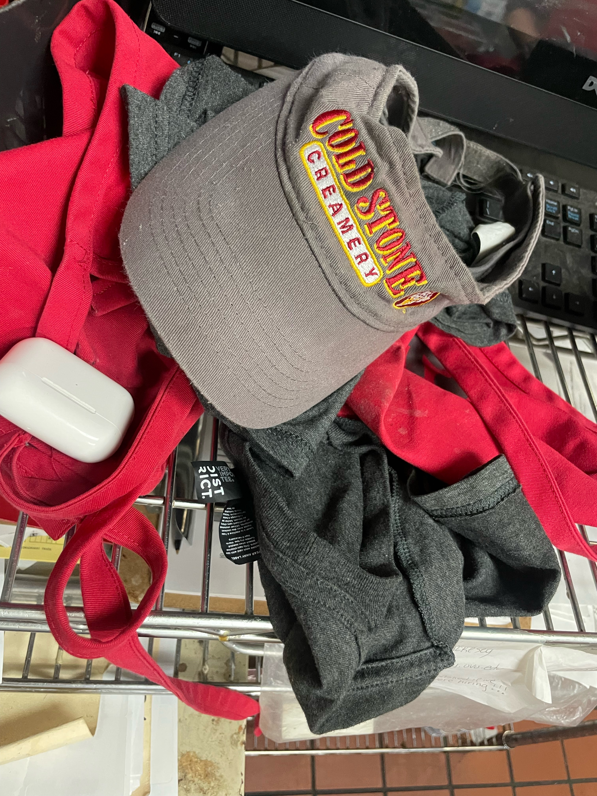
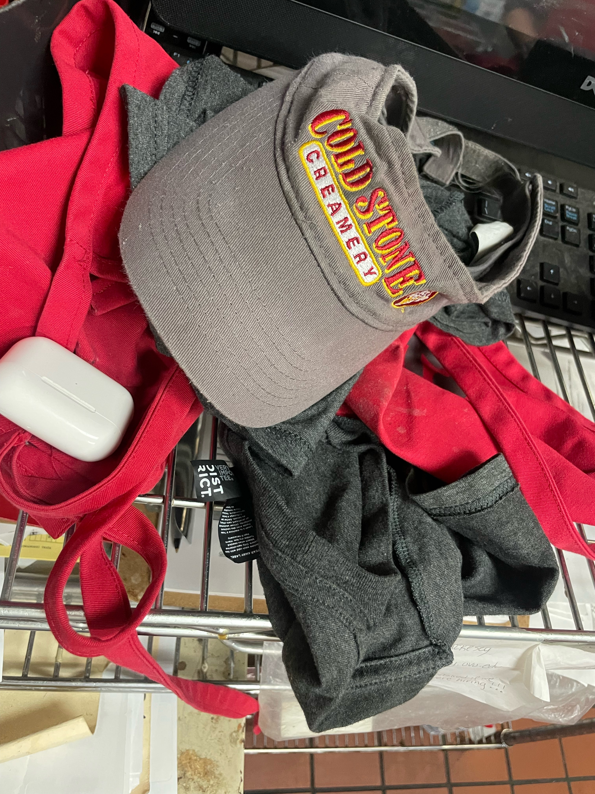

Xiomara Rodisha
My name is Xiomara Rodisha and I am currently a freshman at UC-Riverside. I am on the pre-business track with a goal to graduate with a Business Analytics degree with a minor in computer science. I grew up in Inglewood, California and went to Venice High School. At Venice, I was in the STEM program which consisted of me taking STEM related courses every year which allowed me to find a passion in technology which is why I pursued a business analytics degree. During my time spent at Venice, I discovered that I enjoy listening to music whilst also analyzing data which is something I hope to combine in my future.
My most recent working experience consists of working as a crew member at Cold Stone Creamery and Jamba Juice. Prior to that I worked as a tutor for a family friend and a recreational leader at the park over the summer. From all these opportunities, I learned how to work with others and how to treat people with care and consideration. I learned how to handle money by working at the cashier and maintaining a clean space whilst doing my work. I learned how to handle conflicts with customers by respecting different points of views while also explaining store policies.
Some things I enjoy outside of work are listening to music, playing basketball, reading fiction books and traveling to new places. Some of my favorite genres of music are Rhythm and Blues, Neo Soul and Rap. I also enjoy listening to pop music. I like exploring new music daily. I would consider discovering new music as my favorite hobby. My next favorite hobby is traveling to new places to try new foods, learn about different cultures and meet new people from all walks of life. I enjoy being out of my comfort zone and exploring the beauty of the world. My next favorite hobby is reading, preferably fiction books to expand my mind outside of the real world. My favorite reading genres are romance, fantasy and mystery.
With my major, I plan to work at a music company like Spotify or Apple Music to analyze music data trends and create software to provide a better listening experience to users such as myself because I love music and have a unique outlook on what makes listening music on an app better than any other platform. I see how music has become a staple in many people’s lives, such as needing to listen to music when they are driving, cooking, walking or eating. Music has become such a background that we forget how truly important a resource music is. I want to create a resource that reminds people that music is truly life changing.
Experience
Crew Member
• Handled monetary and card transactions for customers quickly and efficiently
• Worked cohesively with co-workers to handle customers orders as well as handle issues with customers concerns
• Efficiently followed safety policies when handling food and beverages to uphold health standards
Crew Member
• Adaptability to work in fast-paced environments whilst still providing a positive experience for the customer with quick service
• Communicated clearly to customers and co-workers in situations where their was a problem to be solved
Academic Tutor
• Assisted kids in grades 6-8 with their curriculum in subjects such as Algebra, English and Physics
• Provided kids with daily homework assistance and assessment preparation
• Helped over 10 kids who where in danger of failing a class pass with a C or above
Education
UC Riverside
Portfolio


